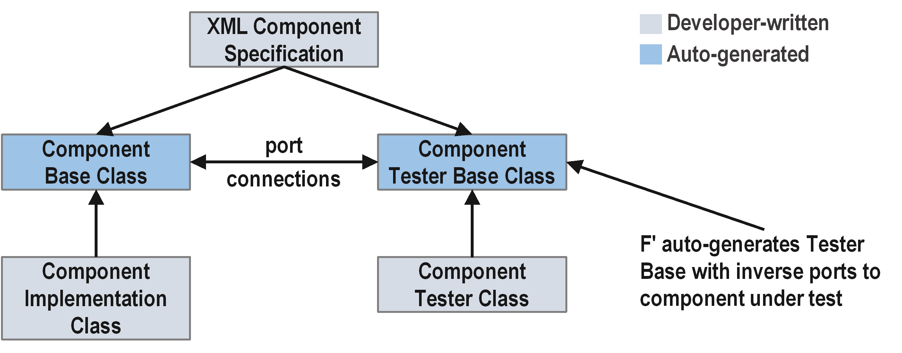

Unit Testing in F´
Testing is an important part of flight software (FSW) development. Testing is divided into two phases: i) unit testing, and ii) integration testing. Unit testing tests the individual units, such as F′ components, while integration testing tests the integrated system. Test framework classes include the auto-generated TesterBase, the auto-generated GTestBase, and the developer-written Tester. The testing phases and test framework classes are discussed in further detail below.
Unit Testing
Thorough unit testing is critical. It provides unit-level regression tests, and makes integration easier since localized errors are caught early and system-level issues only appear during integration.
F′ provides the support for unit testing at the component level. The overall framework for unit testing is shown in Figure 1.

Figure 1. Unit testing framework overview.
The goal of unit testing is to cover all component-level requirements and achieve close to 100% code coverage with a reasonable amount of system state and path coverage. These requirements should drive the tests. A record of how the tests cover the requirements should be maintained. Mapping the tests to requirements can be recorded on a spreadsheet, or in the actual test using comments or in the console output mechanism.
Generating test scaffolds
To generate the initial test files, run the following command from the component directory:
This produces template files under test/ut/:
| Generated file | Purpose | Action |
|---|---|---|
<Component>Tester.template.hpp |
Tester class header | Rename to <Component>Tester.hpp |
<Component>Tester.template.cpp |
Tester class impl | Rename to <Component>Tester.cpp |
Test framework classes
The below TesterBase and the GTestBase classes are generated into the build cache, while the Tester is developer-written from the generated template.
TesterBase is the base class for testing a component and provides a harness for unit tests. The TesterBase interface is the mirror image of the component (C) under test. For each output port in C there is an input port called a "from port," and for each input port in C there is an output port called a "to port." For each "from port" there is a history (H) of data received through a virtual input handler that stores its argument into H. The TesterBase provides utility methods for writing tests for the component. These include sending commands, sending invocations onto ports, and getting and setting parameters and time.
GTestBase is derived from the TesterBase and includes headers
for the Google Test framework with F′ specific macros. It supports test
assertions, such as ASSERT_EQ(3, x) to check that two values are
equal when writing tests. The F′ specific macros check the telemetry
received from the ports, the events received from the ports, and the
data received (user-defined) from the ports. The GTestBase is factored
into a separate class so its use is optional on systems that do not
support it.
Tester is derived from the GTestBase and contains the component under test as a member. The developer adds test methods and helper functions to this class.
Tester class structure
The Tester constructor must call initComponents() then
connectPorts(). The component under test is a member of the Tester.
#include "<Component>GTestBase.hpp"
#include "<Namespace>/<Component>/<Component>.hpp"
namespace <Namespace> {
class <Component>Tester : public <Component>GTestBase {
public:
static constexpr U32 MAX_HISTORY_SIZE = 10;
static constexpr FwEnumStoreType TEST_INSTANCE_ID = 0;
static constexpr FwSizeType TEST_INSTANCE_QUEUE_DEPTH = 10;
<Component>Tester();
~<Component>Tester();
// Test methods
void testNominal();
private:
void connectPorts();
void initComponents();
<Component> component;
};
} // namespace <Namespace>
TestMain
The TestMain.cpp file contains the Google Test TEST() macros and the
main() function. Use COMMENT(...) to describe what each test
verifies and REQUIREMENT(...) to trace tests to requirements. Both
macros are provided by Fw/Test/UnitTest.hpp.
Always seed STest::Random so randomized picks are reproducible from
the seed printed at test start.
#include "Fw/Test/UnitTest.hpp"
#include "STest/Random/Random.hpp"
#include "<Namespace>/<Component>/test/ut/<Component>Tester.hpp"
namespace <Namespace> {
TEST(<Component>, Nominal) {
COMMENT("Describe what this test verifies.");
REQUIREMENT("REQ-ID");
<Component>Tester tester;
tester.testNominal();
}
} // namespace <Namespace>
int main(int argc, char** argv) {
::testing::InitGoogleTest(&argc, argv);
STest::Random::seed();
return RUN_ALL_TESTS();
}
Assertion macros
To check event and telemetry histories the user first sends a command, and then checks events and telemetry by writing the following code.
Important: Call this->clearHistory() at the start of each test
action to reset all histories. Without this, assertions may pass or fail
based on residual state from previous actions.
Sending Commands:
this->clearHistory();
// Send command
this->sendCOMMAND_NAME(
cmdSeq, // Command sequence number
arg1, // Argument 1
arg2 // Argument 2
);
this->component.doDispatch(); // required for async/queued components
// Assert command response
ASSERT_CMD_RESPONSE_SIZE(1);
ASSERT_CMD_RESPONSE(
0, // Index in the history
Component::OPCODE_COMMAND_NAME, // Expected command opcode
cmdSeq, // Expected command sequence number
Fw::CmdResponse::OK // Expected command response
);
Checking Events:
// Assert total number of events in history
ASSERT_EVENTS_SIZE(1);
// Assert number of a particular event
ASSERT_EVENTS_EventName_SIZE(1);
// Assert arguments for a particular event
ASSERT_EVENTS_EventName(
0, // Index in history
arg1, // Expected value of argument 1
arg2 // Expected value of argument 2
);
Checking Telemetry:
// Assert total number of telemetry entries in history
ASSERT_TLM_SIZE(1);
// Assert number of entries on a particular channel
ASSERT_TLM_ChannelName_SIZE(1);
// Assert value for a particular entry
ASSERT_TLM_ChannelName(
0, // Index in history
value // Expected value
);
Checking Output Ports:
// Assert total number of entries on from ports
ASSERT_FROM_PORT_HISTORY_SIZE(1);
// Assert number of entries on a particular from port
ASSERT_from_PortName_SIZE(1);
// Assert value for a particular entry
ASSERT_from_PortName(
0, // Index in history
arg1, // Expected value of argument 1
arg2 // Expected value of argument 2
);
Setting Parameters:
To set the parameters in a test of component C, write the following code. This call stores the argument in member variables of TesterBase, so when C invokes the ParamGet port it receives the argument.
Setting Time:
To set the time in a test of component C, write the following
code. Time is an Fw::Time object, so when C invokes the TimeGet
port it receives the value time.
Invoking Ports:
To invoke an input port on the component under test, use the
invoke_to_<portName> method. For active or queued components, call
this->component.doDispatch() afterward to process the message.
this->clearHistory();
this->invoke_to_schedIn(0, context);
this->component.doDispatch(); // active/queued components only
Helper functions
Every test method should read as a sequence of meaningful actions, not raw port calls and assertion macros. Extract repeated patterns into helper functions on the Tester class.
Action helper — wraps a port invocation with clearHistory() and
doDispatch():
void <Component>Tester::sendScheduleTick() {
this->clearHistory();
const U32 context = STest::Pick::any();
this->invoke_to_schedIn(0, context);
this->component.doDispatch();
}
Assertion helper — wraps a group of related assertions:
void <Component>Tester::assertTelemetryIdle() {
ASSERT_TLM_Counter_SIZE(0);
ASSERT_EVENTS_SIZE(0);
}
Combined test — reads as high-level actions:
void <Component>Tester::testNominal() {
sendScheduleTick();
ASSERT_TLM_Counter_SIZE(1);
ASSERT_TLM_Counter(0, 1);
ASSERT_EVENTS_SIZE(0);
}
Use STest::Pick::any() and STest::Pick::lowerUpper(lo, hi) for
port numbers, IDs, and sizes where the specific value does not matter.
CMakeLists.txt registration
Register unit tests in the component's CMakeLists.txt using
register_fprime_ut:
register_fprime_ut(
AUTOCODER_INPUTS
"${CMAKE_CURRENT_LIST_DIR}/<Component>.fpp"
SOURCES
"${CMAKE_CURRENT_LIST_DIR}/test/ut/<Component>TestMain.cpp"
"${CMAKE_CURRENT_LIST_DIR}/test/ut/<Component>Tester.cpp"
DEPENDS
STest
UT_AUTO_HELPERS
)
UT_AUTO_HELPERSautocodesconnectPortsandinitComponentsfrom the FPP model. Omit only if custom port wiring is needed.DEPENDS STestis required when usingSTest::Pick,STest::Rule, or scenario classes.
For rules-based tests, add the additional source files:
SOURCES
"${CMAKE_CURRENT_LIST_DIR}/test/ut/<Component>TestMain.cpp"
"${CMAKE_CURRENT_LIST_DIR}/test/ut/<Component>Tester.cpp"
"${CMAKE_CURRENT_LIST_DIR}/test/ut/TestState/TestState.cpp"
"${CMAKE_CURRENT_LIST_DIR}/test/ut/Rules/<GroupName>.cpp"
Building and running
fprime-util build --ut # build unit tests
fprime-util check # run unit tests
fprime-util check --coverage # run with code coverage
Choosing a test library
Components that call into libraries have two ways to write tests:
- Link against the library in the test
- Link against a mock or stub library
If you link against the library in the test, avoid linking against the mock or stub library. Linking against only the test library proves that the component code works with the actual library.
Linking against a mock or stub library makes it easier to induce behaviors for testing, like injecting faults. This approach may be the only option on some platforms.
Code coverage
Code coverage checks which lines were run at least once during a test. Tools like gcov perform code coverage analysis by compiling and running the tests, then producing a report.
Generally, code coverage checks close to 80% of lines. The remaining lines are usually off-nominal behaviors that may require additional effort to check by reverse reasoning from the desired behavior to synthesize the inputs, or by injecting faults into the library behaviors.
Note that 100% code coverage does not check which system states were tested, nor which paths through the code were tested.
To review code coverage analysis, go to the component directory and review the summary output _gcov.txt files. Next, go to the component directory to review the coverage annotation *.hpp.gcov and *.cpp.gcov source files.
Rules-based testing
For components with internal state or multiple interacting ports, use rules-based testing with STest. See the rules-based testing guide for the full procedure.